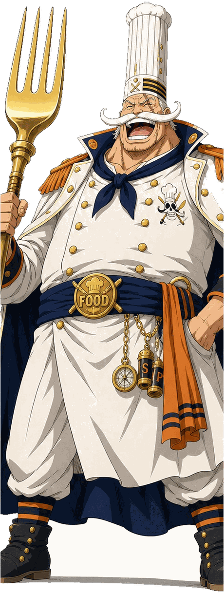

La commission ronge ta marge.
Sur chaque commande, une part importante part à la plateforme. Sur un métier où la marge se joue déjà à quelques points, ça change tout.
Cap sur Tours — pour les indépendants
0 commission, tes plats à tes prix, tes clients : Captain.Food te rend ce que les grandes plateformes t'ont pris.
Une plateforme de commande locale, entreprise solidaire d'utilité sociale (ESUS) — pensée pour les restaurants et food trucks indépendants, à Tours.
Gratuit, sans exclusivité. Tu gardes tes plateformes actuelles — Captain.Food vient en plus, pas à la place.

Là où part ton argent
Sur les grandes plateformes de livraison, chaque commande te coûte cher — bien plus que tu ne le crois.
Sur chaque commande, une part importante part à la plateforme. Sur un métier où la marge se joue déjà à quelques points, ça change tout.
La plateforme connaît leur nom, leur adresse, leurs habitudes. Toi, non. Le jour où tu la quittes, tu repars de zéro.
Pour absorber la commission, tu gonfles tes tarifs en ligne — et tu te retrouves avec deux cartes, deux prix, un client qui ne comprend pas.
La commission monte ? Tu l'apprends. Ton classement baisse ? Tu ne sais pas pourquoi. Les règles changent ? Tu suis.
« Je m'en moque, je répercute la commission sur mes prix. »
C'est ce que beaucoup se disent. Mais regarde ce qui se passe vraiment.
Tes prix en ligne gonflent. Le client commande moins, ou commande ailleurs. Tu ne le vois pas — ces commandes n'arrivent jamais — mais c'est un gros manque à gagner.
Répercuter la commission, ce n'est pas l'annuler. C'est la faire payer à ton chiffre d'affaires.
Le point commun des trois ? Tu perds — de la marge, du volume, ou les deux. Le seul réglage qui te fait vraiment gagner n'est pas dans cette liste : 0 commission.
Les plateformes de livraison à commission prélèvent en général 25 à 35 % par commande.
Deux logiques, un choix
| Critère | Plateforme à commission | Captain.Food |
|---|---|---|
| Commission sur tes plats | 25 à 35 % par commande | 0 % |
| Tes prix | Gonflés pour absorber la commission | Les mêmes qu'en salle |
| Ta clientèle | Confisquée : tu ne sais pas qui commande | À toi, dès la première commande directe |
| Ton canal | Le leur, tu suis leurs règles | Le tien, sous ton nom |
| Les règles du jeu | Elles changent, tu l'apprends | Fixées par un statut solidaire (ESUS) |
Comparaison des modèles économiques, pas d'un acteur en particulier.
Ton pavillon, tes règles
Captain.Food est une plateforme de commande locale qui te redonne le contrôle. En ligne et à table, sous ton nom.
Tu gardes 100 % du prix de ce que tu vends. Toujours.
Pas une fiche noyée dans l'annuaire d'un autre : un vrai site de
commande à toi, tonresto.captain.food, que tu peux
utiliser comme ta vitrine en ligne. Inclus. (Tu veux ton propre nom
de domaine, tonresto.fr ? On te le met en place — un
service en option que tu gardes en main.)
Dès la première commande passée en direct, tu accèdes à ta propre base clients — pour les fidéliser, les informer, les faire revenir. C'est à toi.
Les mêmes prix qu'en salle. Rien à gonfler, rien à cacher.
Question légitime — et voici la réponse, en clair.
D'abord l'essentiel : toi, restaurateur, tu ne paies jamais de commission sur tes plats — 0 €, dans tous les cas. Le service n'est pas financé sur ton dos.
Il est financé par une contribution du client, ajoutée à sa commande en prix libre : chacun donne ce qu'il veut pour faire vivre une alternative locale et juste. C'est un pari — celui que des clients informés préfèrent soutenir le commerce de leur ville plutôt qu'une multinationale.
Et si les contributions libres ne suffisent pas à couvrir nos frais, un petit montant fixe prend le relais — à la charge du client, juste de quoi couvrir les frais bancaires et techniques d'une commande. Jamais un pourcentage, jamais sur ta marge.
Exemple illustratif — une commande de 30 €
Le client ne souhaite pas contribuer ? Un petit forfait fixe — de l'ordre de 0,70 € (exemple), à sa charge — couvre juste les frais de transaction. Toi, tu touches tes 30 €, dans tous les cas.
Sur une plateforme à ~30 % de commission, il ne te resterait qu'environ 21 € sur la même commande.
Montants donnés à titre d'exemple pour illustrer le principe, pas une grille tarifaire.
Ton site Captain.Food, c'est ta base. De là, tu encaisses des commandes de trois manières — toutes sans commission sur tes plats.
Tes clients commandent en ligne sur ton site, à ton nom. Pas d'intermédiaire qui se sert au passage.
Le client commande à l'avance et récupère sur place. Simple, direct, sans matériel en plus.
Le client scanne, commande depuis sa place. La commande part en cuisine, et le paiement reste dans ta caisse habituelle — on ne touche pas à ton encaissement. C'est inclus, sans commission.
Un outil pour tout ton service, au lieu d'un canal de plus à gérer.
Un cap qui ne dérive pas
Captain.Food part d'une conviction simple : le numérique doit être un outil d'utilité publique, pas un péage aux mains de quelques géants de la tech. On commence là où le déséquilibre est le plus criant — la livraison de repas — du côté des restaurateurs, des livreurs et des habitants.
Le problème des grandes plateformes n'est pas qu'elles gagnent de l'argent. C'est qu'une fois que tu en dépends, elles peuvent presser — et rien ne les en empêche.
Captain.Food est une entreprise solidaire d'utilité sociale (ESUS). Ce statut n'est pas un argument marketing : c'est un cadre juridique qui encadre notre lucrativité et notre raison d'être. Notre objectif est de faire vivre une alternative locale et juste, pas de maximiser un profit sur les indépendants.
Notre cap : devenir une coopérative (SCIC), où restaurateurs, livreurs et citoyens auront voix au chapitre. Par construction, on ne pourra pas devenir ce qu'on combat.
qui en ont assez de travailler pour la commission des autres.
qui veulent un canal de commande simple, à leur nom, sans matériel lourd.
attachés à leur quartier, à leurs habitués, à leur métier.
Si tu es une grande enseigne à la recherche du plus gros volume au moindre coût, on n'est probablement pas faits pour toi. Si tu veux reprendre la main sur ton affaire, embarque.
Port d'attache
Captain.Food démarre ici, à Tours, avec un premier groupe de restaurateurs. Pas partout, pas tout de suite : un territoire, bien fait, entre indépendants qui se connaissent.
On construit la plateforme avec les premiers restaurants qui embarquent — leurs retours façonnent l'outil. Rejoindre maintenant, c'est peser sur ce que Captain.Food deviendra.
Moins que tu ne crois.
Laisse-nous ton contact : on te recontacte pour te présenter Captain.Food, sans engagement.
Oui. 0 % de commission sur tes plats, inscription gratuite. Le service est financé par une contribution libre des clients, pas par toi.
Par une contribution libre du client, ajoutée à sa commande, en toute transparence. Si ça ne suffit pas, un petit montant fixe — à la charge du client, jamais un pourcentage — prend le relais pour couvrir les frais de transaction. Toi, tu ne paies pas de commission : 0 €, dans tous les cas. Voir le détail complet, exemple à l'appui.
Non. Captain.Food vient en plus, sans exclusivité. Beaucoup de restaurants gardent les deux et voient Captain.Food comme leur canal direct, celui qu'ils maîtrisent.
Parce que ça ne te coûte rien et que tu n'as aucune exclusivité à donner. Tu es référencé, tu récupères ta base clients dès tes premières commandes directes, et tu façonnes l'outil pendant qu'on démarre. Les premiers embarqués sont ceux qui pèsent le plus.
Chaque commande passée en direct sur ta page t'appartient : tu accèdes aux coordonnées de tes clients (avec leur consentement) pour les fidéliser toi-même. Contrairement aux grandes plateformes, on ne confisque pas ta clientèle.
« Entreprise solidaire d'utilité sociale » : un agrément qui encadre juridiquement notre lucrativité et impose une finalité sociale. En clair, une garantie que Captain.Food ne pourra pas dériver vers ce qu'on dénonce.
Tu peux aussi prendre les commandes à table via Captain.Food, sous ton nom. Le paiement reste dans ton système habituel — on ne s'insère pas dans ta caisse.